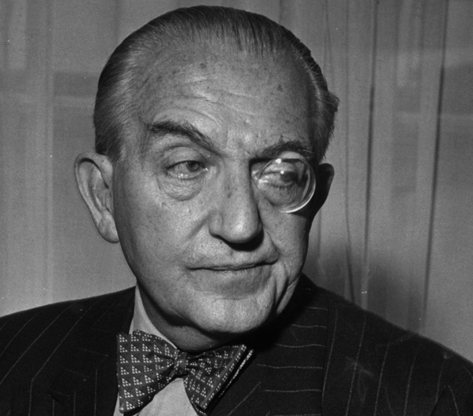
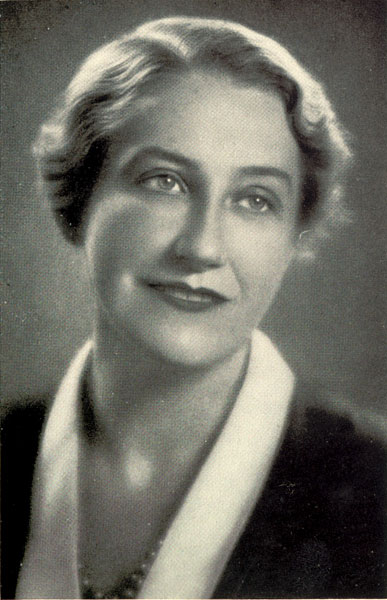
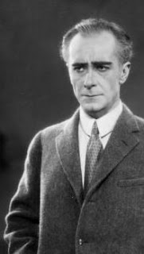
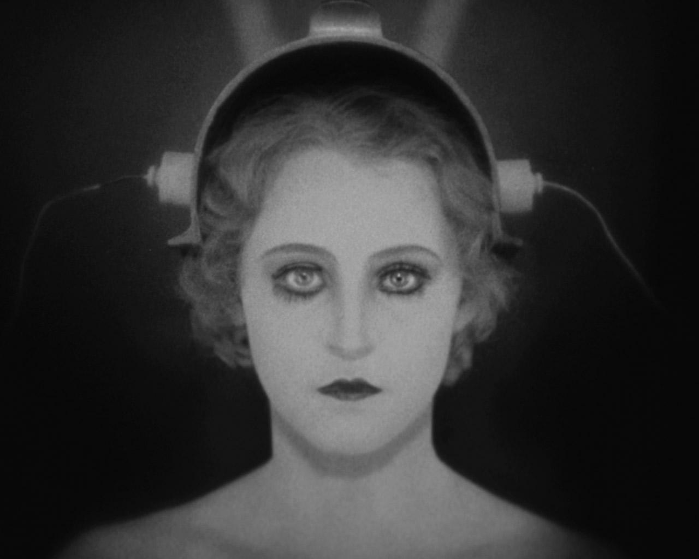
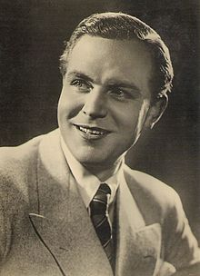

Metropolis, l'équipe
Fritz Lang
Le réalisateur et scénariste de Metropolis
Filmographie:

- Madame Butterfly (1919)
- Les araignées (1919)
- Le métis (1919)
- Der herr der liebe (1919)
- Araignées-le cargo d'esclaves (1920)
- L'image vagabonde (1920)
- Les trois lumières (1921)
- Coeurs en lutte (1921)
- Docteur Mabuse le joueur (1922)
- Les Niebelungen (1923)
- Metropolis (1927)
- Les espions (1928)
- La femme sur la Lune (1929)
- M le maudit (1931)
- Le testament du docteur Mabuse (1932)
- Liliom (1934)
- Furie (1936)
- J'ai le droit de vivre (1937)
- Casier judiciaire (1938)
- le retour de Frank James (1940)
- Les pionniers de la Western Union (1941)
- Confirm or deny (1941)
- Chasse à l'homme (1941)
- Les bourreaux meurent aussi (1943)
- Le ministère de la peur/Espions sur la Tamise (1944)
- La femme au portrait (1944)
- La rue rouge (1945)
- Carpe et poignard (1946)
- Le secret derrière la porte (1948)
- The house by the river (1950)
- Guérillas (1950)
- Le démon s'éveille la nuit (1952)
- L'ange des maudits (1952)
- Règlement de comptes (1953)
- La femme au Gardénia (1953)
- Désirs humains (1954)
- Les contrebandiers de Moonfleet (1955)
- la 5ème victime (1956)
- L'invraisemblable vérité (1956)
- Le tombeau hindou (1959)
- Le tigre du Bengale (1959)
- Le diabolique Docteur Mabuse (1960)
Thea von Harbou
L'auteure du livre Metropolis, et scénariste du film
Filmographie:
Bibliographie:

- Docteur mabuse le joueur (1922)
- Les Nibelungen : Siegfried (1924)
- M le maudit (1931)
Bibliographie:
- Die nach uns kommen. Ein Dorfroman (1910)
- Der Krieg und die Frauen (1913)
- Die Masken des Todes (1915)
- Der unsterbliche Acker (1915)
- Die Flucht der Beate Hoyermann (1916)
- Der belagerte Tempel (1917)
- Adrian Drost und sein Land (1918)
- Das Indische Grabmal (1918)
- Legenden (1919)
- Die unheilige Dreieinigkeit (1920)
- Das Haus ohne Tür und Fenster (1920)
- Das Nibelungenbuch (1924)
- Die Insel der Unsterblichen (1926)
- Metropolis (1926)
- Mann zwischen Frauen. Novellen (1927)
- Frau im Mond (1928)
- Spione (1928)
- Liebesbriefe aus St. Florin (1935)
- Aufblühender Lotus (1941)
- Gartenstrasse 64 (1962)
Gottfried Huppertz
Le compositeur de la musique dans Metropolis
Filmographie:
- Les Nibelungen : Siegfried (1924)
- Les Nibelungen : la vengeance de Kriemhield(1924)
- Zur Chronik von Grieshuus (1925)
- Metropolis (1927)
- Der Judas von Tirol (1933)
- Elisabeth und der Narr (1933)
- Hanneles Himmelfahrt (1934)
- Le domino vert (1935)
- Durch dir Wüste (1936)

Alfred Abel
Un des acteurs principaux
Filmographie:

- Le fantôme (1922)
- Mabuse le joueur (1922)
- 117bis Grande rue (1926)
- Une Dubarry moderne (1927)
- Metropolis (1927)
- L'homme aux yeux verts (1928)
- L'Argent (1928)
- L'inconnue (1929)
- Mary (1930)
- Le congrès s'amue (1931)
- Wege zur guten Ehe (1933)
Brigitte Helm
L'actrice principale
Filmographie:

- Metropolis (1927)
- L'Argent (1928)
- Crise (1928)
- Le mensonge de Nina Petrovna (1929)
- L'amour de Jeanne Ney (1929)
- La Mandragore (1930)
- Gloria (1931)
- L'atlantide (1932)
- L'étoile de Valencia (1933)
- Die schönen Tage von Aranjuez (1933)
- Adieu les beaux jours (1933)
- Ce que femme rêve (1933)
- Stadt Anatol (1936)
Gustave Fröhlich
Un des acteurs principaux
Filmographie:

- De bruut (1922)
- Paganini (1923)
- Metropolis (1927)
- Asphalte (1929)
- L'immortel vagabond (1930)
- Kismet (1930)
- Gloria (1931)
- L'amour commande (1931)
- C'est un amour qui passe (1932)
- Gardez le sourire (1933)
- la marche de Rakoczi (1933)
- Adieu Vienne (1939)
Rudolf Klein-Rogge
Un des acteurs principaux
Filmographie:
- Le cabinet du docteur Caligari (1920)
- L'image vagabonde (1920)
- les trois lumières (1921)
- Coeurs en lutte (1921)
- Docteur Mabuse le joueur (1922)
- Les Nibelungen (1923)
- The queen was in the parlour (1927)
- Metropolis (1927)
- Les espions (1928)
- le testament du docteur Mabuse (1932)